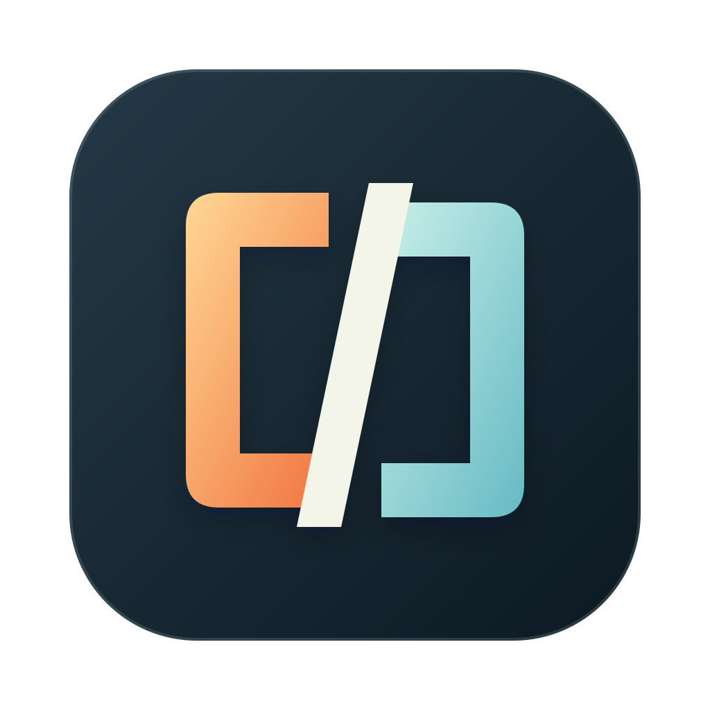

Find your flow.
A keyboard-first Linux desktop inside your Mac. Start with RiftVM’s ARM64 Omarchy image, set up your user, and make it yours.
LINUX, WITH CHARACTER
RIFTVMAPPLE SILICON / MACOS 27
Omarchy. macOS. Your next workspace.
One native Mac app.
TWO WORLDS. ONE MAC.Cross the rift.Explore RiftVM
CHOOSE YOUR SIDE OF THE RIFT
A keyboard-first Linux desktop inside your Mac. Start with RiftVM’s ARM64 Omarchy image, set up your user, and make it yours.
LINUX, WITH CHARACTERA separate macOS workspace from a compatible restore image. Try a new setup while your everyday system stays familiar.
A NEW SPACE TO EXPERIMENTBring your own world. Custom ARM64 Linux also has an ISO installation path.
BUILT TO STAY OUT OF YOUR WAY
Close a workspace window while its virtual machine keeps running. Bring it back from the menu bar.
Share folders per workspace, read-only or read-write. Your Home folder is not shared by default.
New factory images start new workspaces. Existing guests keep their disks and update through their own tools.
Before you begin
Not yet. Version 0.1.0 is in development. Follow the App releases for the signed download when it is ready. Image candidates are build and testing artifacts, not an App release.
RiftVM targets Apple Silicon Macs running macOS 27. Intel Macs and older macOS versions are outside the initial release scope.
No. RiftVM is an independent project. Omarchy and its ARM64 adaptation are separate upstream projects; their licenses and attribution remain with their respective owners.
Only grant a guest access to folders you intend to share. Read-write access lets guest applications change those source files. This website uses no analytics, cookies, or third-party scripts.
The App, CLI and Agent live together. The Omarchy image pipeline is maintained separately so App and image releases can be verified independently.